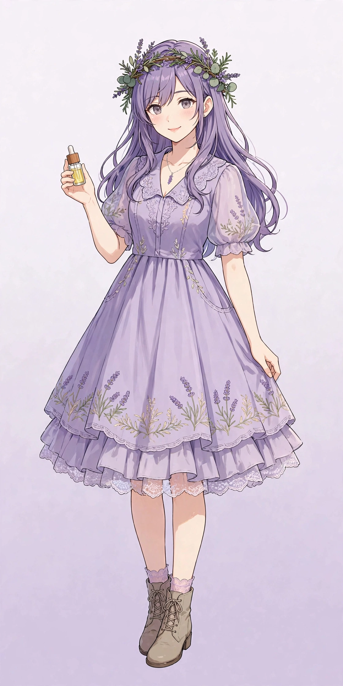
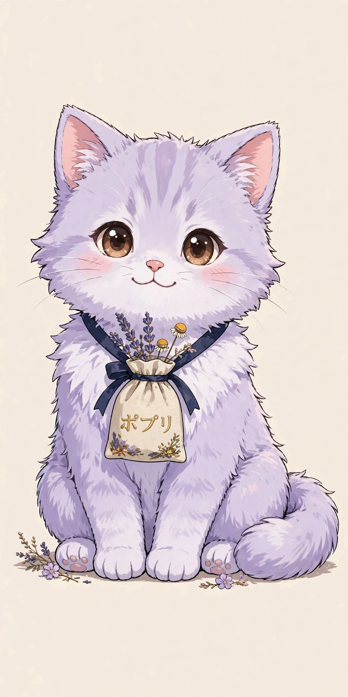

AROMA LEARNING NOTEアロマセラピーの学習サイト
基礎と安全な使い方から、精油19種の図鑑、毎日のセルフケア、ブレンドの考え方まで。初めてでも迷わない順番で学べます。日本の植物から生まれる「和精油」の特集も加わりました。
本サイトの内容は一般的な学習・情報提供を目的としたもので、医療行為や診断ではありません。体調に不安がある場合は医療機関へご相談ください。


LEARNING ROUTE学ぶ順番
現在、精油図鑑19種・学習記事36本を公開中です。
各柱の入口となる解説記事です。まずはここから読み、興味が広がったら「読み物」の記事で実践のヒントを深めてください。
学びの記事と読み物に登場する精油を、1本ずつ図鑑にまとめました。五十音順の一覧と、休息・気分転換・集中・入浴などのテーマからの絞り込みで探せます。各精油の香りの系統や学名、紹介されている記事へのリンク付きです。
日々の暮らしの中で香りと休息を楽しむための読み物です。学んだ基礎を、実際の場面でどう生かすかのヒントとしてお読みください。
学びを深める本と、このサイトに新しく掲載した商品を紹介するコーナーです。本はアロマの基礎固めと香りの仕組みを学ぶ3冊、商品は精油・ディフューザー・入浴剤から最近掲載した3点を選びました。
InstagramとThreadsで、精油の基礎知識、季節に合わせたセルフケアのコツ、新着記事のお知らせを発信しています。学びの続きを、日常の合間に受け取れます。
公式アカウント @aroma.techo（Instagram / Threads 共通）
このページは、これからアロマセラピーとセルフケアを学ぶ方のための道案内です。何から手をつければよいか分からない、という方ほど、順番を決めて進むことが近道になります。
ステップ1「アロマの基礎」では、精油とは何か、植物のどの部分からどうやって得るのか（水蒸気蒸留法、圧搾法など）、ラベルに書かれた学名と科名の読み方、品質の見分け方、保存方法、そして安全原則を学びます。ここを飛ばすと、後の実践で迷いやすくなります。入口記事「精油とは何か」からどうぞ。
ステップ2「精油プロフィール」では、精油を1本ずつ学びます。主な成分、香りの特徴、伝統的に使われてきた場面、注意点をセットで覚えるのがポイントです。まずはラベンダーなど身近な1本から始めてください。このサイトでは効能を断定せず、伝統的な使われ方として紹介します。
ステップ3「セルフケアの実践」では、学んだ知識を暮らしに移します。呼吸を整えること、入浴の工夫、セルフマッサージの基本、休息の取り方、季節ごとのケアなどです。どの実践にも安全上の注意と、必要に応じて受診の目安を添えています。「がんばるケア」ではなく、続けられる小さな実践を積み重ねてください。
ステップ4「ブレンドと素材の考え方」では、自分で組み立てる力を付けます。希釈と濃度の計算、キャリアオイルの種類と特徴、香りのバランスの取り方が中心です。基礎と安全原則を理解してから進むステップです。
医療行為の案内や診断めいた表現はしません。症状が続く、強い痛みやしびれがある、といった場合はセルフケアで判断せず医療機関への相談を案内します。商品については、各記事のテーマに合うおすすめを記事ごとに紹介します。トップページで商品を主役にする構成にはしません。
このサイトの学び記事・読み物に登場する精油を集約した図鑑です。各精油の説明は、記事で紹介されている内容と一般的な香りの特徴の範囲でまとめています。精油は香りを楽しむためのもので、効能を保証するものではありません。使う前には「安全に学ぶために」の内容もあわせてご確認ください。
テーマで絞り込む
五十音で探す